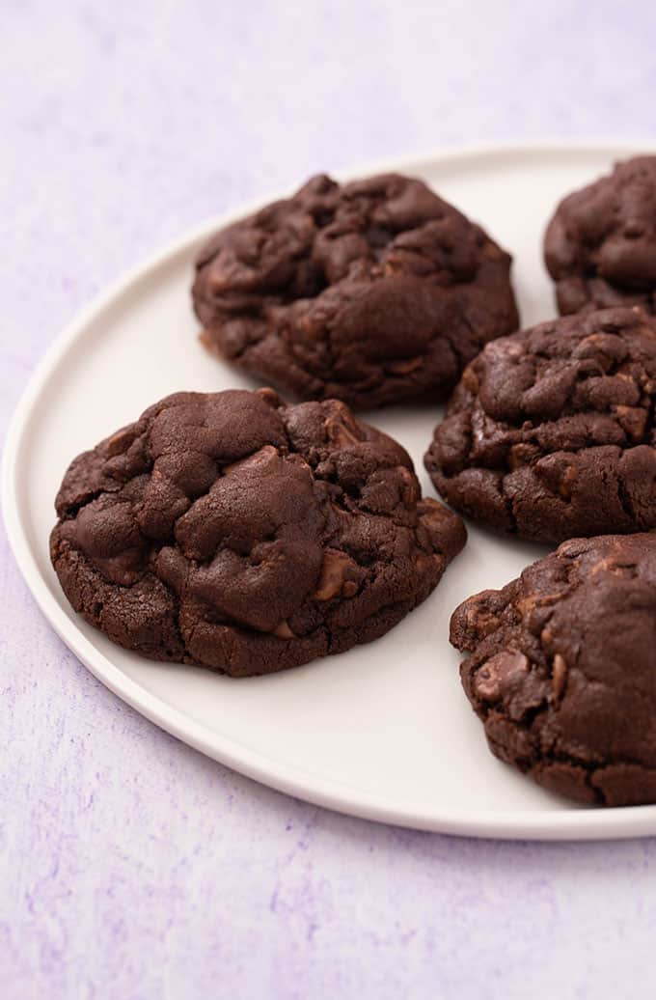

Chocolate Cookies

Description:
These soft-baked thick and chunky double chocolate chip cookies are rich and fudge-like with chewy centers and chocolate chips in each bite.
Ingredients:
- 2 eggs and 1 yolk
- 1 cup brown sugar and 1/2 cup white sugar
- 2 cups self raising flour and 1/2 cup normal flour
- 1/2 cup cocoa powder
- 1 tbs vanilla extract
- 250gr melted butter
- 200gr milk chocolate and 50gr 70% dark chocolate
- 1/4 tsp salt
Directions:
- Mix flour with the cocoa powder and salt
- In a separate bowl whisk the sugar, vanilla extract with the melted butter
- When the butter is cool down, add the eggs and whisk together.
- Chop the chocolate in rough chunks and leave one chunk per cookie aside for topping later
- Mix the dry ingredients with the wet one, including the chocolate chunks until it forms a soft dough then scoop the dough and shape it into a ball the size of a large egg
- Place the shapped dough onto a baking tray, press them down and place one chunk on top for each cookie, then bake them in the pre-heated oven at 180C for exactly 8 minutes